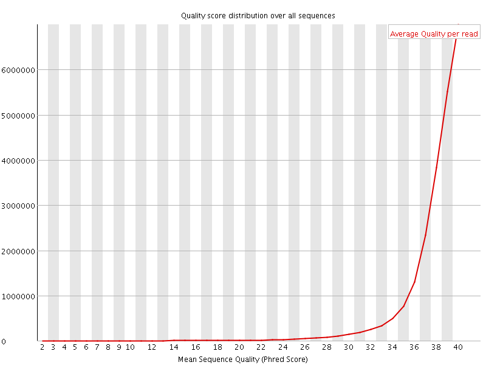
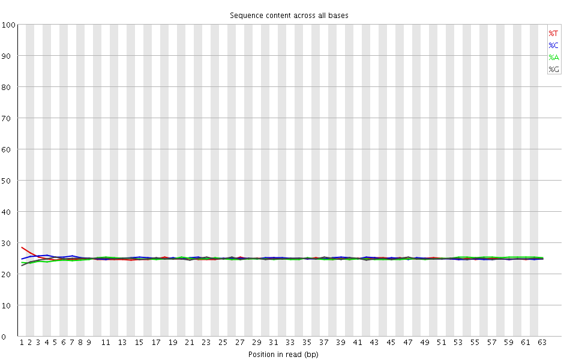

![[OK]](Icons/tick.png) Basic Statistics
Basic Statistics
| Measure | Value |
|---|---|
| Filename | SRR1039508_1.fastq |
| File type | Conventional base calls |
| Encoding | Sanger / Illumina 1.9 |
| Total Sequences | 22935521 |
| Filtered Sequences | 0 |
| Sequence length | 63 |
| %GC | 50 |
Per base sequence quality

Per sequence quality scores

Per base sequence content

Per base GC content

Per sequence GC content

Per base N content

Sequence Length Distribution

![[FAIL]](Icons/error.png) Sequence Duplication Levels
Sequence Duplication Levels

![[WARN]](Icons/warning.png) Overrepresented sequences
Overrepresented sequences
| Sequence | Count | Percentage | Possible Source |
|---|---|---|---|
| ACACGTCTGAACTCCAGTCACCGATGTATCTCGTATGCCGTCTTCTGCTTGAAAAAAAAAAAA | 57182 | 0.24931633338523243 | TruSeq Adapter, Index 2 (100% over 51bp) |
Kmer Content

| Sequence | Count | Obs/Exp Overall | Obs/Exp Max | Max Obs/Exp Position |
|---|---|---|---|---|
| AAAAA | 4804430 | 3.706321 | 8.484774 | 54 |
| TCCAG | 3216940 | 2.4243982 | 6.139877 | 13 |
| CTTCT | 3231735 | 2.4120157 | 6.2681446 | 42 |
| CTGCT | 3156430 | 2.3661888 | 6.2150974 | 45 |
| TCTTC | 3120820 | 2.329234 | 6.2448235 | 41 |
| CTCCA | 2977815 | 2.2271044 | 6.021519 | 12 |
| TTCTG | 2642950 | 1.9877024 | 5.869271 | 43 |
| GAAAA | 2498865 | 1.9259509 | 5.8149223 | 51 |
| CTGAA | 2339585 | 1.7783476 | 5.7903533 | 7 |
| TCTGC | 2305175 | 1.7280532 | 5.5996647 | 44 |
| TGAAA | 2200480 | 1.6869885 | 5.493965 | 50 |
| TCTGA | 1997945 | 1.5106146 | 5.4311666 | 6 |
| CCAGT | 1975905 | 1.489111 | 5.2778015 | 14 |
| TCACC | 1981210 | 1.4817449 | 5.4157877 | 18 |
| TGCTT | 1951000 | 1.4673026 | 5.3132963 | 46 |
| TTGAA | 1827520 | 1.3936354 | 5.2231913 | 49 |
| GATGT | 1709295 | 1.3022828 | 5.2070427 | 23 |
| CTTGA | 1714430 | 1.2962534 | 5.1432395 | 48 |
| GTCTG | 1699515 | 1.283797 | 5.176027 | 5 |
| ATCTC | 1679010 | 1.2598109 | 5.0714383 | 28 |
| ATGCC | 1591955 | 1.1997528 | 5.2134004 | 35 |
| GTCTT | 1576625 | 1.1857437 | 5.0159497 | 40 |
| GAACT | 1517985 | 1.1538395 | 5.153304 | 9 |
| ACTCC | 1523930 | 1.1397455 | 5.002365 | 11 |
| AGTCA | 1492825 | 1.134715 | 5.0034227 | 16 |
| TGAAC | 1455960 | 1.1066933 | 5.009371 | 8 |